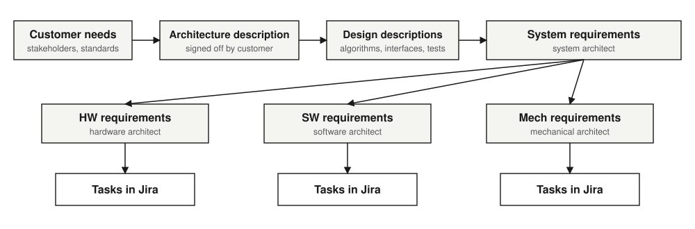
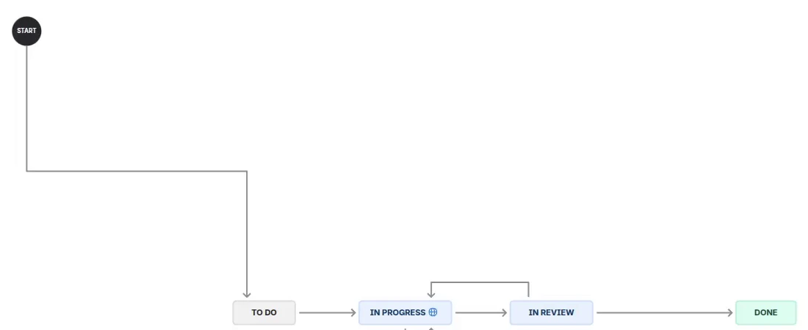
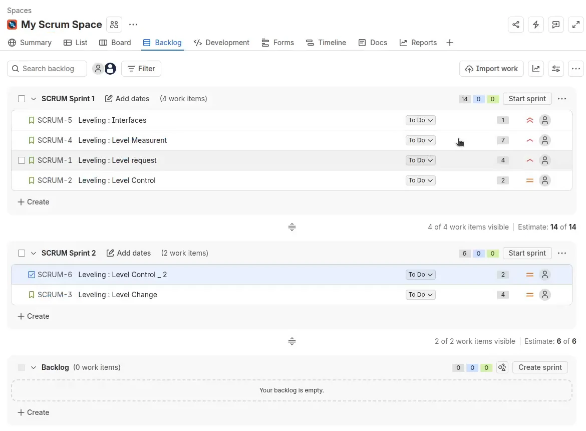

Навчання / Заняття 16 · 11.11.2026
Jira на практиці: workflow, story points і ємність спринту
Що має бути в тікеті, коли можна обійтися без ітерацій, декомпозиція активної підвіски, workflow без обхідних шляхів, голосування story points і спринт на 80 % ємності.
11.11.2026Заняття 16 / 1601:36:23Практичне заняття
Хронологія курсу
Інженерний конспект
Що має бути в тікеті, коли можна обійтися без ітерацій, декомпозиція активної підвіски, workflow без обхідних шляхів, голосування story points і спринт на 80 % ємності.
Від вимог до тасок
Story points і голосування
Ємність спринту до 80 %
Повний конспект заняття
Повний конспект заняття
Повний авторський конспект за транскриптом від 11 листопада. Схеми — редакторські, за поясненнями викладача; імена студентів не публікуються.
Заняття 16. Jira на практиці: ієрархія робіт, workflow, story points і ємність спринту
11 листопада 2026 · практичне заняття · 1 год 36 хв. Матеріал підготовлено за автоматичним транскриптом і відеозаписом заняття
IgorSikorskyKPI_L11_111126.mp4: таблиці, налаштування Jira й розрахунки, які викладач показував на екрані, додано з відео. Під час перерви на укриття (приблизно 00:47–00:57) мовлення в записі немає. Це відредагований навчальний конспект, а не дослівна стенограма: очевидні помилки розпізнавання виправлено, терміни уніфіковано з попередніми заняттями. Імена студентів і третіх осіб не публікуються. Розмова про практику й співбесіди — думка й досвід викладача. Редакторські уточнення й схеми редакції позначено окремо.
0. Організаційне
- Під час заняття було дві тривоги; під час ракетної загрози викладач оголосив 10-хвилинну перерву й попросив усіх, хто в Києві, перейти в укриття: «Воно того не варто».
- Заняття продовжує заняття 15: учора створили дошку в Trello, сьогодні — налаштування Jira.
- На початку викладач відкрив учорашню дошку demoBoard: картка «Збір інформації про об’єкт і середовище» вже стояла в Review, а в її журналі були всі переміщення між списками.
1. Повторення: що має бути в тікеті
Нагадування на прикладі Trello (вендор той самий, що й у Jira та Confluence — Atlassian, «фактично монополіст у трасованості процесів і задач»):
| Поле | Правило |
|---|---|
| Стадія | To Do, In Progress, Hold, Review, Done — або інші, залежно від вашого робочого процесу |
| Назва | Лаконічна, але достатня, щоб зрозуміти задачу |
| Description | Що зробити, які очікуються результати й критерій завершення (definition of done); важливі уточнення автора — «дані на сайті», «таблиця в Excel» |
| Коментарі | Лишаються в історії з датою й часом; редагування коментарів можна заборонити |
| Assignment | На кого призначено задачу |
| Labels | Категорія (testing, documentation…) — аналог міток у GitHub, щоб швидко знайти групу тікетів |
| Дати | Старт обов’язковий, фініш бажаний — до коли задача актуальна |
| Сабтаски / чек-лист | Виконавець закриває пункти один за одним — прогрес видно |
Якщо задачу не прописано детально, виконавець або зробить «щось не те», або витрачатиме ваш час на пояснення, або скаже: «Ви недостатньо пояснили задачу, тому я зробив так».
Правило викладача: після кожної зміни статусу (In Progress → Hold, In Progress → Review, Review → Done) лишайте коментар — що перевірили, чи є зауваження. Це запобіжник: людина справді попрацювала з задачею, а не перетягнула її машинально.
Чому Trello небезпечний: картку з In Progress можна перетягнути одразу в Done, оминувши Review. Якщо перехід у Done автоматично запускає GitHub Action, що робить merge у main, неперевірений код потрапляє в головну гілку — серйозне джерело помилок.
2. Kanban і Scrum: що потрібно знати до старту
Scrum — не апогей, а одна з моделей роботи команди. Його мінус — надмірність: розробку «прокатують» кілька разів ітеративно, постійно покращуючи. Викладач сформулював це так: спочатку — щоб працювало, потім — щоб працювало добре, потім — щоб виглядало красиво. Чотири ітерації займають більше часу: продукт ви отримаєте пізніше, але з меншими ризиками.
Редакторське уточнення. Цю послідовність зазвичай цитують як «Make it work, make it right, make it fast» і приписують Кенту Беку; схожу думку раніше формулював Браян Керніган.
Чому не завжди Kanban, який, за словами викладача, «з першої ітерації видає і гарно, і якісно»? Бо Kanban у його розумінні передбачає одну умову: ще до початку проєкту дуже чітко розуміти, що ви робите. Немає місця research, спробам і помилкам. Потрібні:
- Requirements engineering — величезна галузь: стандарти, гайдлайни, фреймворки, дуже чітка комунікація зі стейкхолдерами й замовником. До проєкту залучають людей, які знають процеси й стандарти: архітекторів, technical writers, лідів.
- Architecture description — великий документ строгого контролю, який описує всю систему «на папері, у форматі А4». Його узгоджують із замовником; той підтверджує листом або підписом, що документ повністю відповідає тому, що він хоче отримати.
- Design descriptions — декомпозиція архітектури: кожен шматок системи з алгоритмом роботи, інтерфейсами, технологіями й підходом до тестування.
- Розподіл між архітекторами. Системний архітектор передає галузевим архітекторам (software, hardware, mechanics) великі шматки роботи разом із system requirements. Hardware-архітектор «пропускає їх через себе» й видає hardware requirements, а з них нарізає таски в Jira. Таски покривають його вимоги, його вимоги — системні.


Тоді все прописано до початку роботи, і система буде найкраще узгоджена. Приклад із практики викладача: він був архітектором апаратного модуля зі своїми інтерфейсами, а інший архітектор на боці клієнта описував джгути. Через брак комунікації джгут і інтерфейс не зійшлися — різниця в кілька міліметрів. Довелося терміново робити адаптер-перехідник, а виправити це вдалося лише в наступній ітерації розробки через пів року. «Ми не наслідували Kanban: робили за Scrum — і він, і я окремо, паралельно — і отримали два неузгоджені шматки однієї системи».
Scrum — для роботи, де «фіг його знає, як це робити»: є загальне розуміння, але невідомо, що всередині, які методи й бібліотеки. Починають з інтерфейсів, потім шукають основну бібліотеку, стикують її з інтерфейсами, потім UI. «Є неосяжне поле, яке треба виорати: взяли один квадратик — виорали, стало зрозуміліше, — пішли далі».
Якщо ж усе можна описати одразу — тоді Kanban дає чудову систему «за один заскок». Але якщо «флопнули» на рівні системної інженерії — шансів виправити не буде: «гігантські інвестиції, кинуті під поїзд».
Редакторське уточнення. Те, що викладач тут називає Kanban, — це план-орієнтований підхід (waterfall, V-модель): повна специфікація й архітектура до старту, формальне погодження із замовником. Саме такий підхід типовий для проєктів за ISO 26262 чи Automotive SPICE. Канбан-дошку часто використовують для виконання такого плану. У канонічному визначенні (Kanban Guide) Kanban — це стратегія оптимізації потоку з контролем незавершеної роботи; повної специфікації до старту вона не вимагає. Головна думка заняття від цього не змінюється: чим краще описано систему до старту, тим менше ітерацій потрібно; чим більше невизначеності — тим більше ітерацій.
3. Приклад: активна підвіска автомобіля — від композиції до тасок
Наскрізний приклад заняття — активна підвіска автомобіля, лише програмна частина (hardware й механіка — out of scope).
| Рівень | Що це в прикладі |
|---|---|
| Композиція | Активна підвіска |
| Епіки (компоненти) | Levelling — зміна кліренсу; Damping — зміна жорсткості; Roll control — контроль крену, щоб авто не заносило |
| Сторі | Інтерфейси; первинна ініціалізація; реалізація зміни кліренсу передньої й задньої частини |
| Таски | Нагнітання повітря в пневмоподушку; спускання повітря; аварійна зупинка потоку повітря |
Декомпозицію викладач спершу записав у LibreOffice Calc «драбинкою»: кожен нижчий рівень — на одну колонку правіше. Над активною підвіскою він дописав ще два рівні — «Розробка СК авто» (системи керування автомобілем) і «Керування положенням тіла автомобіля», щоб показати, де закінчується зона відповідальності команди.

Над композицією є ще вищий рівень — керування положенням кузова, ще вище — система керування автомобілем. Але це out of scope команди: з тими командами ходять на дзвінки й узгоджують інтерфейси, але нічого для них не імплементують. Тому окремо прописують інтерфейси вниз (до виконавчих механізмів) і інтерфейси вгору (до вищої програмної частини керування автомобілем).

4. Налаштування простору Jira
Викладач створив простір за Scrum — «ітеративний підхід для software engineering — прямо клева штука» — з назвою Vehicle body control active suspension. На дошці з’явилися спринт (часовий інтервал для розв’язання задач) і backlog («кошик», де задачі чекають, поки їх візьмуть у спринт). На екрані простір називався My Scrum Space із ключем SCRUM — з цього ключа складаються номери задач (SCRUM-1, SCRUM-2…); відразу після створення в ньому були порожні SCRUM Sprint 1 і Backlog.
За замовчуванням можна було створювати лише сторі, фічі й баги, тому в налаштуваннях простору додали Epic і сконфігурували поля кожного типу роботи: За замовчуванням в епіку були Summary (обов’язкове) і Description, а також Status, Assignee, Labels, Parent, Team, Due date, Start date, Sprint і Story point estimate; системні поля Environment, Original estimate, Priority й Time tracking додаються з бічної панелі. Пізніше викладач додав Priority і в тип Story.
| Тип | Поля, які лишили | Що прибрали і чому |
|---|---|---|
| Epic | Summary, Description (обов’язковий), Assignee (необов’язковий — епік може належати команді загалом), Start/Due date, Reporter — хто створив і відповідає | Sprint — епік абстрактніший за спринт; Story points — стосуються фіч, тасок і сабтасок; Parent — епік над епіком виходить за канонічну ієрархію |
| Bug | Original estimate (за скільки виправимо), Assignee, Parent (задача, у якій знайшли баг), Due date, Labels, Team, Start date, Sprint (у який спринт виправляємо), Priority | — |
| Feature / Task | Summary, Description з критерієм завершення, Original estimate, Priority, Assignee, Parent (епік), Due date, Labels, Team, Start date, Story points, Time tracking | — |
Team потрібен, бо команд може бути кілька: одна — levelling, друга — damping, третя — roll control, плюс тестувальники, DevOps тощо. Задачу можна призначити на всю команду, і команда сама вирішить, хто її робить.
Time tracking важливий за моделі Time & Material: клієнт хоче знати, на що саме пішов час («на таку-то фічу — 20 годин»), а не просто раз на місяць отримувати великий інвойс. У Jira можна запустити й зупинити таймер або внести час вручну.
Workflow
Головне налаштування — workflow, тобто якими шляхами задача може рухатися статусами: Типовий workflow шаблону мав переходи «Any» — у кожен статус можна було потрапити з будь-якого іншого. Викладач прибрав їх, намалював явні переходи (зокрема «Take» з To Do в In Progress), створив новий статус HOLD і зберіг workflow для всіх шести типів робіт: Epic, Subtask, Task, Story, Feature, Bug. Статус Review у Jira називається In Review.
| Перехід | Правило |
|---|---|
| Створено → To Do | Автоматично, без умов |
| To Do → In Progress | Тільки через дію «Take» |
| In Progress ↔ Hold | Можна зупинитися, якщо заблоковані; з Hold — лише назад в In Progress |
| In Progress → Review | Робота готова до перевірки |
| Review → Done | Тільки після рев’ю |
| Review → In Progress | Рецензент знайшов проблему — на доопрацювання |
| Будь-що → To Do | Заборонено: задача ніколи не повертається в To Do |
| Будь-що → Done | Заборонено, крім як із Review |



Такий workflow «безпечний: ніхто не зможе обійти систему». Його застосували до всіх типів робіт. Для багів хотілося прибрати Hold, але викладач залишив його: без Hold можливий вічний цикл In Progress → Review → In Progress. Якщо ідеї, як виправити баг, закінчилися, баг має десь «спочити», а не забирати час на «биття лобом у стіну».
5. Story points
Чи можна одразу сказати, скільки коштуватиме й займе фіча levelling — щоб авто на ходу піднімалося перед з’їздом у ліс і опускалося на трасі? «Рік, може два, з десятьма інженерами, а може, двадцятьма» — це вгадайка. Цілу фічу ніхто при здоровому глузді не оцінює; її розбивають на маленькі шматки.
- Інтерфейс між системою керування й компресором: запит на новий тиск — фактично один параметр. Компресор сам знає свій поточний тиск і вирішує, накачати чи спустити. Це вже можна оцінити: один інженер певного рівня — приблизно два дні.
- Оцінка поточного тиску — «це вже важче». Ключове слово — важче: йдеться про відносні величини.
Найпростіша задача, яку вдалося прив’язати до часу й конкретної людини, — це 1 story point. Менших задач, найімовірніше, вже не буде. Решту оцінюють відносно неї:
| Задача фічі levelling | Оцінка |
|---|---|
| Інтерфейс до компресора | 1 SP |
| Виміряти поточний тиск | 3 SP (≈ утричі складніше) |
| Керувати тиском — регулятор (P, PI, PID, LQR…) | 6 SP |
| Фіча levelling загалом (спрощено) | ≈ 10 SP |
Немає математичної формули на кшталт «сторіпоінт — це 10 людино-годин інженера такого-то класу»: люди різні, і «класів» немає.
Як команда голосує
Оцінку робить уся команда, і голоси рівні — викладача, тімліда чи джуна. На занятті кожен назвав свою оцінку задачі «вимір рівня»: від 4 до 9 SP. Голоси викладач вносив у таблицю: 6, 5, 6, 9, 7, 4, 8, 5; крайні значення 9 і 4 він підсвітив червоним. Середнє — 6,25, яке завжди округлюють угору, до 7: через ризики.
Найцінніше — крайні значення:
| Крайність | Можливі причини |
|---|---|
| Максимум (9) | Інженер хоче більше часу, «щоб погуляти» (за словами викладача, найпоширеніше); досвідчений інженер уже робив подібне й знає, де вилазять проблеми; просто був неуважний |
| Мінімум (4) | Інженер робив щось подібне й знає, як зробити швидше |
Обидві крайності — «дар богів»: або ви на ранній стадії виявляєте проблему, або знаходите людину з досвідом і швидший спосіб розв’язання. «В адекватному бізнесі немає місця наїздам на команду».
Редакторське уточнення. Описана вправа близька до Planning Poker (James Grenning, 2002; популяризував Mike Cohn у 2005 році). Канонічно всі показують оцінку одночасно, щоб уникнути «якоря», потім автори найвищої й найнижчої оцінки пояснюють свої міркування, і команда голосує знову, доки оцінки не зійдуться. Часто використовують шкалу, схожу на ряд Фібоначчі (1, 2, 3, 5, 8, 13…). Усереднення з округленням угору — поширений варіант. Прив’язка «1 SP = 2 дні» — це локальна домовленість команди для першого спринту; далі ємність зазвичай прогнозують за фактичною швидкістю (velocity) попередніх спринтів.
6. Пріоритети й ємність спринту
Пріоритети визначаються залежностями. У backlog викладач створив п’ять сторі фічі levelling: Leveling : Interfaces, Level Measurement, Level request, Level Control, Level Change (ключі SCRUM-1…SCRUM-5) і проставив їм оцінки й пріоритети. Від інтерфейсів залежить усе, тож їхній пріоритет — найвищий. Без вимірювання поточного рівня неможливо керувати — високий. Запит рівня — високий. Керування й зміна рівня стають можливими лише після цього.
Розрахунок ємності:
| Параметр | Значення |
|---|---|
| 1 story point | 2 робочі дні одного інженера (оцінка команди) |
| Спринт | 2 тижні = 10 робочих днів (завжди починають із двох тижнів, потім можна змінити) |
| Інженерів у команді | 3 |
| Внесок одного інженера | 0,5 SP на день × 10 днів = 5 SP |
| Ємність спринту | 3 × 5 = 15 SP |

Задачі перетягують у спринт за пріоритетом: Interfaces (1 SP) + Level Measurement (7 SP) + Level request (4 SP) = 12 SP. Наступна задача дає вже 16 SP — більше за ємність, тому створюють спринт 2 і продовжують заповнювати його.
«Хитрий» варіант — розрізати задачу на дві частини, щоб дотягти перший спринт до 15, — викладач відкинув. Спершу він його показав: розділив Level Control на дві задачі по 2 SP (Level Control і Level Control _2), і спринт 1 набрав 14 SP із 15.


А потім пояснив, чому так робити не варто: Задача може взагалі не різатися інженерно; до того ж за спринт з’являться нові задачі, а зміна спринту — «смертний гріх».
Чому не можна перевантажувати спринт, особливо перший:
- перший спринт ніколи не проходить гладко: комусь не встановили інструменти, до когось не приїхав комп’ютер, двоє інженерів сперечаються за місце біля вікна, на когось дме кондиціонер;
- на «математику спринту» накладається команда: хтось когось не злюбив, хтось п’є чай, а не каву — і робота йде повільніше;
- фактор автобуса: будь-хто може захворіти чи вибути, і його задачі лягають на менше людей.
Тому план на 15 SP — ідеалістичний. Викладач послався на SAFe і PMI: завантажуйте спринт до 80 % ємності. Він лишив перший спринт на 12 SP.
Редакторське уточнення. У Scrum Guide (2020) сказано, що під час спринту не вносять змін, які загрожують меті спринту (Sprint Goal); водночас обсяг можна уточнювати й переглядати з Product Owner. Отже, «смертний гріх» — це зміни, що підривають мету спринту, а не будь-яке уточнення. Щодо 80 %: SAFe прямо радить не планувати на 100 % ємності, а його нормована оцінка (8 SP на повну ставку за двотижневу ітерацію) відповідає приблизно 80 % робочого часу. Окремої норми «80 %» у публікаціях PMI ми не знайшли; це поширене емпіричне правило.
Після кожного спринту — ретроспектива й планування наступного: менеджер дивиться, як минув спринт, призначає задачі в новий і потроху налаштовує процес. Мета — щоб команді було комфортно працювати скільки завгодно, клієнт міг платити скільки завгодно, а продукт розвивався скільки можливо. «Якщо я досягну цього — я хороший менеджер». Найсильніший інструмент тут — фідбек команди в кінці спринту.
7. Поза темою: практика й джуни (думка викладача)
Під час перерви на укриття зайшла розмова про переддипломну практику, якої в групі, за словами студентів, не передбачено. Викладач вважає практику на підприємстві дуже цінною:
- диплом на основі реального обладнання, задач і корпоративних процесів — це зовсім інше, ніж абстрактна тема;
- студенти приносять на кафедру сучасні підходи — «корисний стрес» для кафедри, яка інакше «вариться у власному соку»;
- рік тому викладач узяв студентів-практикантів у свій проєкт, і вони показали себе настільки добре, що компанія взяла їх на роботу.
Студент розповів, що потрапити на співбесіду на джуна значно важче, ніж на мідла. Пояснення викладача: це проблема менеджменту. Нетехнічний менеджер боїться джунів — «це ж треба їм усе пояснювати». Технічно підкований — бачить переваги: креативність без «стінок» і можливість зробити проєкт дешевше з більшою маржинальністю. Колосальна різниця в зарплатах, за оцінкою викладача, означає, що місяць роботи сеньйора — це майже рік роботи трейні. Порада: на співбесіді знайдіть слова, щоб донести цей аргумент до менеджменту.
Практичні висновки
- Добрий тікет: лаконічна назва, опис із критерієм завершення, виконавець, мітки, дати, сабтаски.
- Коментар після кожної зміни статусу — запобіжник від машинального перетягування.
- Перехід у Done в обхід Review небезпечний, особливо з автоматичним merge.
- Чим повніше система описана до старту, тим менше потрібно ітерацій; за високої невизначеності — Scrum.
- Ієрархія робіт: композиція → епіки → сторі → таски; інтерфейси вгору й униз — окремі роботи.
- Workflow: Done — тільки через Review, в To Do не повертаються, Hold — захист від вічних циклів.
- Story points — відносна оцінка від найпростішої задачі; голосує вся команда, крайні оцінки обговорюють.
- Ємність спринту рахують від команди й тривалості спринту; перший спринт не завантажують повністю.
Питання для самоперевірки
- Що має містити description тікета і що таке definition of done?
- Чому після кожної зміни статусу варто лишати коментар?
- Чим небезпечний перехід In Progress → Done разом з автоматичним merge?
- Що потрібно мати до старту, щоб працювати без ітерацій, і в чому ризик такого підходу?
- Як співвідносяться system requirements і hardware requirements?
- Як декомпозувати активну підвіску на епіки, сторі й таски?
- Які поля потрібні епіку, а які — багу, і чому?
- Чому в workflow для багів залишили Hold?
- Що таке 1 story point і як оцінюють решту задач?
- Чому середню оцінку округлюють угору і навіщо обговорювати крайні значення?
- Як порахувати ємність спринту для 3 інженерів, спринту в 2 тижні й 1 SP = 2 дні?
- Чому перший спринт не варто завантажувати на 100 %?
Що заплановано далі (прогноз)
Конкретної теми наступного заняття викладач не оголосив. Прогноз редакції, а не анонс: з огляду на вимоги до другої атестації ймовірні діаграма Ганта й діаграма залученості інженерів, розрахунок вартості, наповнення backlog щонайменше на чотири двотижневі спринти, призначення й оцінка задач, а також GitHub Projects — третій інструмент, згаданий на занятті 15.
Перевірені посилання
- The Scrum Guide (2020): https://scrumguides.org/scrum-guide.html
- The Kanban Guide: https://kanbanguides.org/english/
- SAFe — «Planning to 100% capacity? Don’t do it!»: https://scaledagile.com/planning-to-100-capacity-dont-do-it/
- SAFe, Iteration Planning: https://framework.scaledagile.com/iteration-planning/
- Make it work, make it right, make it fast (Kent Beck): https://dev.to/weeklydevtips/make-it-work-make-it-right-make-it-fast